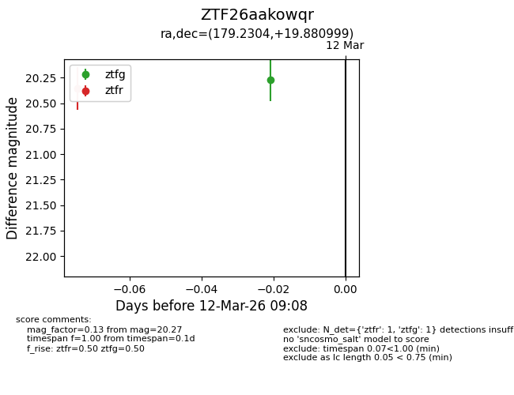
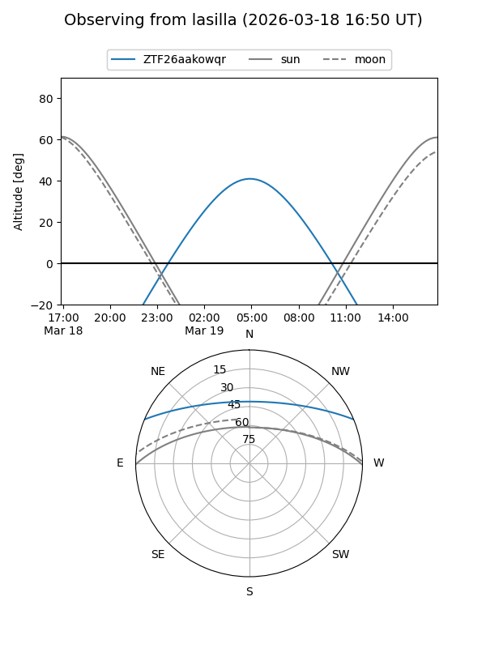
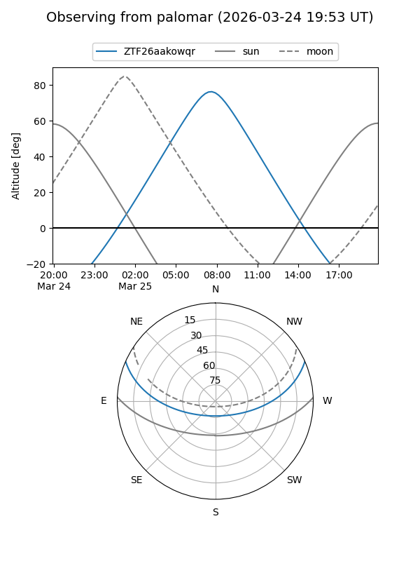
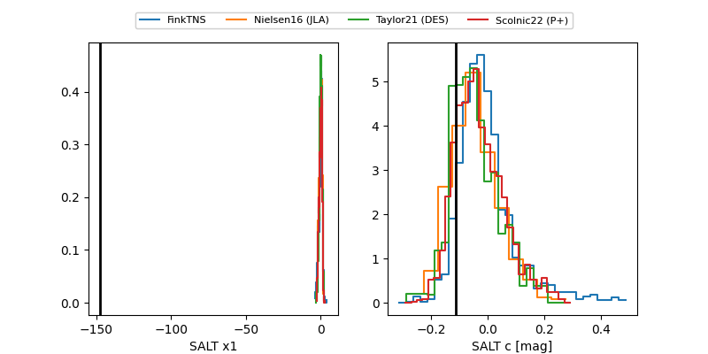

ZTF26aakowqr
Target ZTF26aakowqr at 2026-03-12 09:11
Aliases and brokers:
FINK: link
Lasair: link
ALeRCE: link
alt names
ZTF26aakowqr (ztf,fink_ztf)
Coordinates:
equatorial (ra, dec) = 179.2304,+19.88100
equatorial (HMS+DMS) = 11:56:55.29,+19:52:51.59
galactic (l, b) = (240.1715,+75.56792)
Flags:
Photometry:
last ztfg=20.27, ztfr=20.35
1 ztfg, 1 ztfr detections
Lightcurve

Visibility


Additional plots
